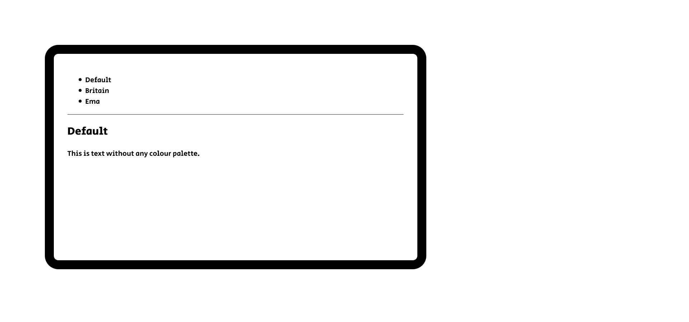

Default
網頁的基礎色調為白色，或是黑色，因為這是多年來設計人找出適合網頁基底用色……
這個區塊的配色大家都很熟悉：毫無回應，就只是個長老 毫無色彩，就只是個白底黑字藍連結的樣式。
很久以前的網際網路，就長這副樣子──但在電腦與網路走進常民的世界後，無法滿足於此的眾人，令網際網路永遠改變了。
色彩組合實在是痛苦的選擇：要嘛不好看、要嘛刺眼至極。
這個網站的前身，是My favour colour schemes這網頁。大略上配置成這樣：
你這網站說是「自己喜歡的顏色」，但一點下去卻是黑白背景、也沒有明顯的導覽，這會很教人錯愕……
對，有導覽的。你的感想呢？
我決定重寫。
網頁的基礎色調為白色，或是黑色，因為這是多年來設計人找出適合網頁基底用色……
這個區塊的配色大家都很熟悉：毫無回應，就只是個長老 毫無色彩，就只是個白底黑字藍連結的樣式。
很久以前的網際網路，就長這副樣子──但在電腦與網路走進常民的世界後，無法滿足於此的眾人，令網際網路永遠改變了。
C0 M91 Y76 K6 and C100 M72 Y0 K18.5 #BritishValues
這是源自於英國國旗 Union Jack 的基本三色：紅、藍、白。許多國旗也會有紅藍白，但是配置與意義完全不一樣。
無論如何，對英國控來說，沒有什麼色彩組合比這個還棒了──不過，我身邊的人似乎不這麼想。
仔細想想。這也是很正常的事情：紅藍混在一起，其實很刺眼。：這兩個色調都太深了，強烈的色彩教人眼難以適應。
很吸睛，又很傷眼的組合。配得不好會很惱人……這是我的結論。
源自於我最喜歡的動畫角色安原繪麻。組合基本上算安全，除了那個源於領帶的亮色有點難用之外。
有沒有類似的色彩組合？有：端傳媒。
端傳媒的連結給我許多啟發：顏色不要嚴格限於三色、不一定要用文字本身強調其不同、善加利用文字外圍的裝飾強調……之類的。
是與非，正如白與黑，
理應涇渭分明，可是人與人
之間的是是非非，或是恩恩怨
怨，卻往往是錯縱複雜，糾纏不
清，呈現是非難辨而白黑交雜會合的
灰色地帶……
很常用。有很多意義。可以很時尚也可以很嚴肅。但無論如何，都是沈重的顏色。
曾經看過文章，說老年人很不喜歡這種黑白配色，理由是因為黑色讓人想到不詳的忌諱。基本上我同意這個觀點：雖然說黑色的背景相當靈活、平常用這種深色背景，也有助於避免亮色傷害眼睛。不過，還是要考慮到黑色的忌諱與沈重比較好。
當然有很多潛在的組合值得一試。不過，目前先寫到這裡吧。
{kind=link}